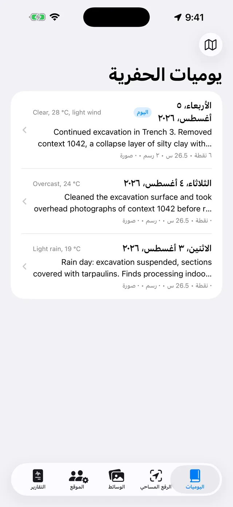
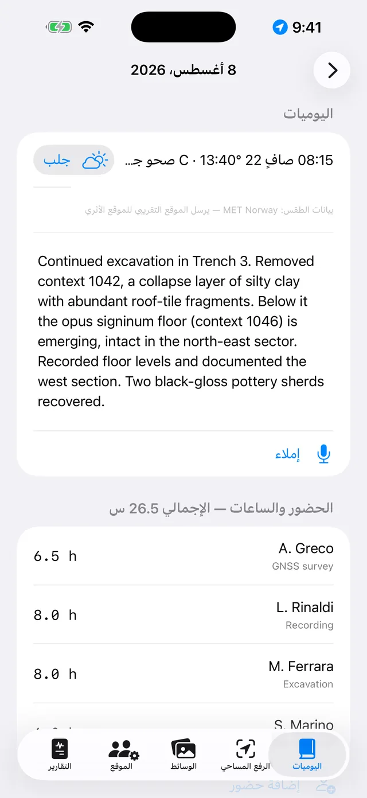
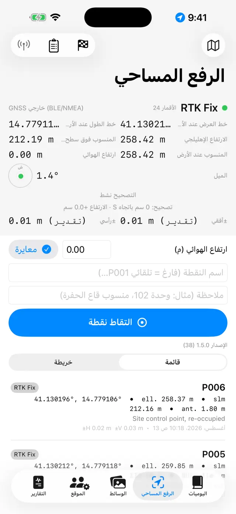
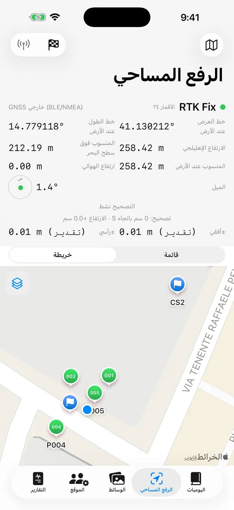
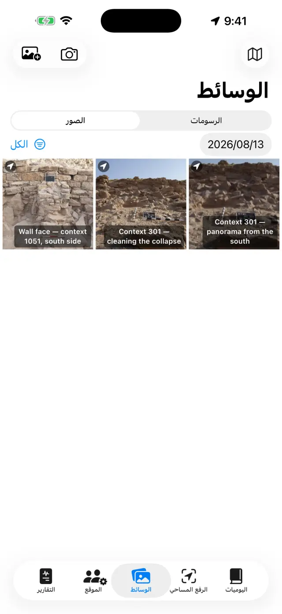
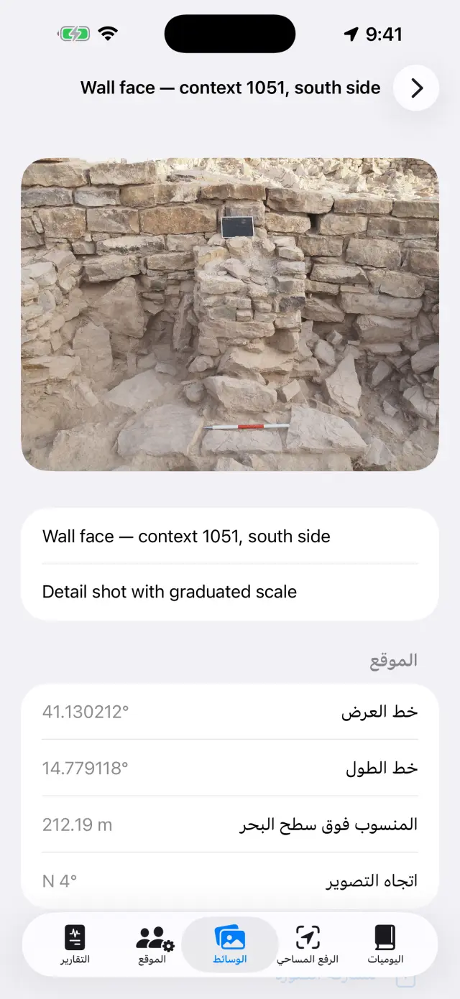
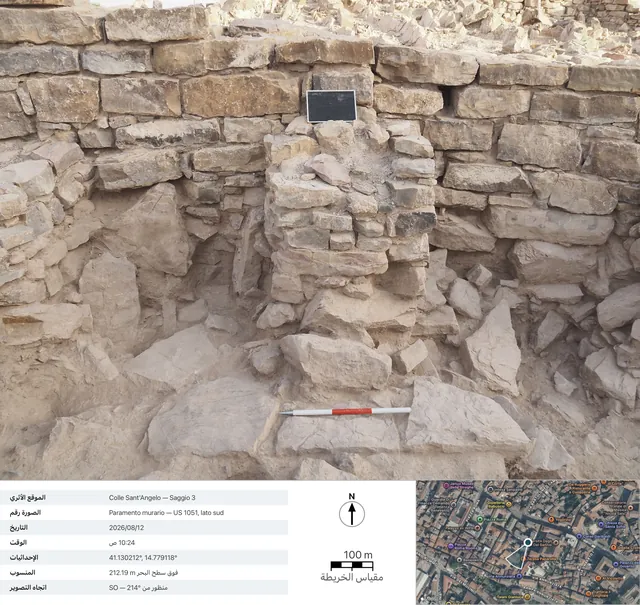
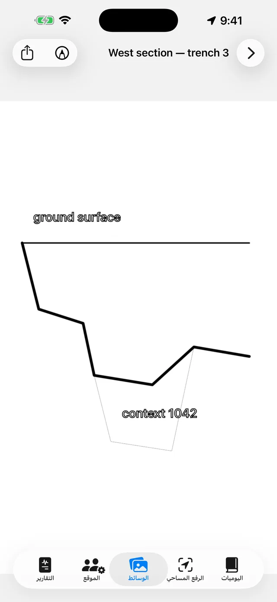
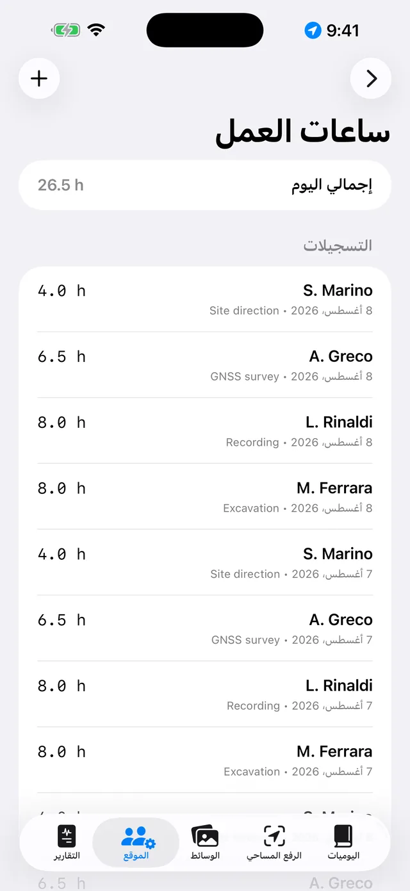
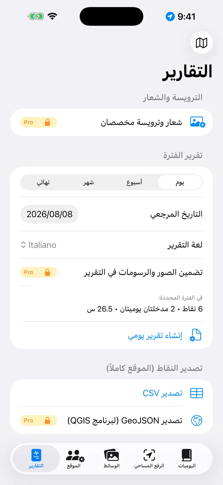

يوميات التنقيب الرقمية لأجهزة iPhone وiPad. يعمل التطبيق دون اتصال بالإنترنت بنسبة 100٪: بياناتك تبقى على جهازك.
📱 Android: نزّل التطبيق (APK، مجاني). في المرة الأولى يطلب Android السماح بالتثبيت من Chrome أو من الملفات؛ بعد ذلك يقترح التطبيق التحديثات بنفسه.
باختصار
فكرة واحدة تحكم كل شيء: كل يوم تنقيب هو صفحة تمتلئ من
تلقاء نفسها. أنت تسجّل الأشياء في مكانها — نقطة GNSS في الرفع المساحي، صورة في
الوسائط، ساعات العمل في الموقع — وصفحة اليوم في اليوميات تجمعها كلها
تلقائيًا. وفي نهاية الأسبوع أو نهاية التنقيب، تُبنى التقارير وحدها من هذه
الصفحات.
يوم عمل نموذجي
الصباحافتح صفحة اليوم، ودوّن حالة الطقس واليوميات (أو تحدث عبر إملاء)
الفريقفي الموقع سجّل الحاضرين وساعاتهم
الرفع المساحيالتقط نقاط GNSS؛ وتحقق من نقطة مرجعية أولًا إن كنت تستخدم RTK
الصورصوّر من الوسائط: تُرفق الإحداثيات تلقائيًا
الرسوماتارسم المقطع أو المسقط فوق صورة (ورق شفاف رقمي)
اللقىمع الصناديق أمامك، سجّل ما خرج من التنقيب: الموقع ← اللقى
المساءمن التقارير أنشئ التقرير اليومي: ملف PDF جاهز للإرسال
الخطوات الأولى
عند أول تشغيل ستجد موقعًا تجريبيًا. لإنشاء موقعك الخاص المس اسم الموقع في
الأعلى (أيقونة 🗺) ← موقع جديد… وأعطه اسمًا (مثل «تل
الأنصاري — مربع 3»).
اسم الموقع النشط ظاهر دائمًا في الأعلى: كل الألسنة تعرض بيانات ذلك الموقع.
لتبديل الموقع المس الاسم مرة أخرى: تجد القائمة تحت عنوان «مواقعك»، وبخيار
إعادة تسمية الموقع… تُصحّح اسمًا دون أن تفقد شيئًا.
امنح الأذونات عند طلبها: الموقع الجغرافي (للنقاط)،
الكاميرا (للصور)، الميكروفون (للإملاء)،
البلوتوث (فقط إن كنت تستخدم مستقبلًا خارجيًا).
الألسنة الستة
📓 اليوميات
المس يومًا لفتح صفحته: اليوميات والطقس والفريق والنقاط والصور ورسومات ذلك
اليوم كلها هناك.
اكتب اليوميات أو المس إملاء وتحدث: يجري التفريغ الصوتي على
الجهاز نفسه ويعمل دون شبكة.
يمكن كتابة الطقس يدويًا (مثلاً «صافٍ، 28 °م، رياح خفيفة») أو جلبه بزر
جلب، الذي يسأل هيئة الأرصاد النرويجية عن الأحوال الحالية. يحتاج إلى
اتصال بالشبكة ويعمل ليوم اليوم فقط: طقس الأمس لم يعد قابلاً للاسترجاع. ولمسة
ثانية بعد الظهر تضيف قياسًا آخر. وما تكتبه بيدك له الأسبقية دائمًا.
عند الجلب لا يغادر الجهاز سوى موقع المنطقة مقرَّبًا إلى نحو 11 مترًا، وفي
التقارير يظهر السطر بلغة التقرير.

قائمة أيام التنقيب

صفحة يوم واحد
🧱 و.ط — البطاقات الطبقية
بطاقة لكل وحدة طبقية، والعلاقات بين الوحدات تُسجَّل كروابط: من هنا تخرج
بطاقات الوحدات الطبقية في التوثيق ومصفوفة هاريس.
في لسان و.ط المس +: يقترح التطبيق الرقم التالي (ويمكنك
تغييره) ويسأل عن النوع والتعريف. الرقم فريد داخل الموقع؛ ويمكنك تغييره لاحقًا
عبر تغيير، فتتبعه الصناديق التي تحمل هذا المصدر.
تجمع البطاقة التعريف (النوع، التعريف، المنطقة أو القطاع، المربع)، والأبعاد
والمناسيب (الطول، العرض، السماكة، المنسوب الأدنى والأعلى)، والوصف (اللون،
التماسك، المكونات)، والتفسير، والتأريخ، وتاريخي الفتح والإغلاق، والمسؤول.
وتُحفظ من تلقاء نفسها وأنت تكتب.
بجانب التعريف واللون والتماسك والمكونات والتفسير والتأريخ زر
المكنز (الكتيّب): اختر من المعجم القياسي أو من مصطلحاتك، فتبقى
البطاقات متجانسة بين كل من ينقّب. وفي المكونات يمكن اختيار أكثر من واحد. وإن لم
تجد الكلمة التي تبحث عنها عرضت الورقة إضافتها. ومصطلحاتك تسري على كل المواقع،
وتُدار من مكنز في القائمة ⋯ للسان الوحدات الطبقية.
إضافة علاقة: اختر العلاقة (تغطي، تقطع، تملأ، تستند إلى، مرتبطة بـ،
مطابقة لـ، ومعكوساتها) واكتب رقم الوحدة الأخرى. تُسجَّل العلاقة مرة واحدة فقط
وتظهر معكوسة في البطاقة الأخرى: إن كانت 101 تغطي 102 قرأت في 102 «مغطاة بـ
101». وإن لم يكن للوحدة الأخرى بطاقة بعد، أُنشئت فارغة. والعلاقة التي تناقض
التسلسل المسجَّل تُرفض مع شرح السبب.
يعرض قسم اللقى الصناديق التي يذكر مصدرها هذه الوحدة («و.ط 102»، «و.ط.ج
12»): لا حاجة إلى أي ربط يدوي. وإضافة لُقية تفتح بطاقة اللقية
والمصدر مكتوب فيها مسبقًا.
من القائمة ⋯ يرسم مصفوفة هاريس التسلسل انطلاقًا من العلاقات:
الوحدة الأحدث في الأعلى، والوحدات المطابقة أو المرتبطة في إطار واحد، والقطوع
بخط متقطع، والوحدات البنائية على خلفية رمادية. يُكبَّر بإصبعين ويُشارَك
كصورة.
📍 الرفع المساحي
تعرض اللوحة العلوية الموقع الحي: الإحداثيات والمناسيب والدقة ونوع الحل
(GPS / RTK Float / RTK Fix).
إن كنت تستخدم عصا، اضبط ارتفاع الهوائي (م): يُختزل منسوب النقطة
إلى الأرض تلقائيًا.
المس التقاط نقطة. الأسماء متسلسلة (P001، P002…) ويمكنك كتابة
اسمك الخاص (مثل «وحدة 102 — قاع الحفرة») وإضافة ملاحظة.
بدّل بين القائمة وخريطة لرؤية النقاط في مكانها؛
ومن الخريطة يمكنك تفعيل السجل العقاري أو خدمة WMS أخرى.
النقاط المرجعية (🏁) لها قسم خاص: استوردها من CSV أو أنشئها، ثم افتح
فحص مباشر وراقب الفروق ΔN/ΔE/ΔZ والقضيب على الوتد، قبل أن تبدأ
الرفع.
تحت دفاتر التسوية يوجد دفتر الميدان الخاص بالميزان البصري:
محطات، وقراءات خلفية وأمامية، ومناسيب تُحسب من نقطة مرجعية للبداية، مع التحقق
من الإغلاق. النقاط المسوّاة تدخل الموقع بمنسوبها، تمامًا مثل نقاط GNSS.
على الأجهزة المزوّدة بماسح LiDAR (أجهزة iPhone Pro من
الجيل 12 فصاعدًا، وiPad Pro) يظهر قياس ثلاثي الأبعاد: وجّه الكاميرا ببطء حتى يكتمل بناء السطح، ثم المس
النقطتين المراد قياسهما واقرأ المسافة والمسافة الأفقية وفرق المنسوب. ومع
التثبيت عند نقطة مرجعية تختار نقطة مرجعية معلومة المنسوب وتلمس
موضعها على الأرض: ومنذ تلك اللحظة يحمل كل قياس أيضًا منسوب طرفيه فوق سطح البحر.
وتثبيت يُبقي القياس في المشهد، وتجاهل القياس يرميه،
ونقل إلى اليوميات يصوغه نصًا تصحّحه قبل التأكيد. وهو قياس بصري،
والتطبيق يصرّح بذلك فيكتب «LiDAR ±cm»: يفيد لفرق منسوب أو لطول يُؤخذ سريعًا في
مكانه، وهو لا يحلّ محل GNSS ولا محل الميزان. أما على الأجهزة بلا ماسح فالزر غير
موجود أصلًا.
تحت اللوحة تجد تسجيلات NMEA: يُحفظ التدفق الخام للمستقبل
الخارجي في ملفات من تلقاء نفسه — يبدأ التسجيل حين
تشغّل الهوائي وينتهي حين تطفئه، دون أن تحتاج إلى تذكّر ذلك. وهو يفيد لإعادة
قراءة يوم مشكوك فيه أو لتسليم البيانات الخام لمن يعالجها لاحقًا. ويمكن مشاركة
الملفات وحذفها، إلا ملف التسجيل الجاري؛ وتُفتح القائمة حتى والمستقبل مطفأ،
فتبقى ملفات الأمس في المتناول.

لوحة GNSS في الرفع المساحي

النقاط والنقاط المرجعية على الخريطة
تحفظ كل نقطة المنسوبين معًا: الإهليلجي
والأورثومتري (فوق سطح البحر). مع GPS الداخلي للهاتف قد لا يتوفر المنسوب
الأورثومتري؛ فهو يحتاج مستقبلًا خارجيًا (انظر أدناه).
📷 الوسائط
صوّر بزر الكاميرا أو استورد من مكتبة الصور.
تُسمّى الصور تلقائيًا بالتسلسل (F001، F002…) وتُسند جغرافيًا بآخر موقع
GNSS متاح.
عند الالتقاط يسجّل التطبيق أيضًا اتجاه التصوير من البوصلة:
في تفاصيل الصورة وفي التقارير تقرأ «منظور من SO — 214°»، وفي اللقطات
الملتقطة عموديًا من الأعلى (المسقط، قاع الوحدة) تظهر عبارة «النظير» مع اتجاه
الحافة العلوية. إن كانت البوصلة مضطربة، يخبرك التطبيق بذلك.
المس صورة لإضافة عنوان وملاحظات (مثل «وحدة 102 من الشمال»).
مشاركة البطاقة تُنشئ
البطاقة الفوتوغرافية التوثيقية: الصورة مع بيانات الالتقاط
أسفلها (الموقع، الرقم، التاريخ والوقت، الإحداثيات، المنسوب، الاتجاه)، وعرضًا
بالقمر الصناعي مع دبوس الموقع ومخروط اتجاه التصوير، وشريط مقياس الخريطة،
وسهم الشمال. تحتاج الخريطة إلى الشبكة: من دونها تخرج البطاقة على أي حال، مع
توسيع لوحة البيانات.
مقياس افتراضي يضع على الصورة المراجع التي لم تكن معك في الميدان.
أولًا معايرة الصورة: تلمس طرفي مسافة تعرفها — علامة على المسطرة، أو
ضلع طوبة — وتصرّح بطولها بالسنتيمتر. ثم تضع ما تحتاج إليه:
مسطرة قياس 5 سم أو مسطرة قياس 10 سم أو
مسطرة قياس 20 سم، وشاخص 50 سم أو شاخص 1 م أو
شاخص 2 م، ومربع 10×10 سم وصليب مرجعي
وسهم الشمال. ولكل عنصر هيئته (شريط مسطح أو
شاخص حقيقي أو مسطرة بعلامات) وحجمه وسماكته ودورانه؛
ولتحريك عنصر اضغط عليه مطولًا ثم اسحبه — فلا يزيحه القرص
للتكبير عن غير قصد.
إضافة قياس يقيس أي مسافة على الصورة بلمستين. والرقم لا يُحفظ
أبدًا: فإن أعدت المعايرة أعادت كل التسميات كتابة نفسها. وفي الصور الملتقطة
عموديًا من الأعلى بكاميرا التطبيق يولد سهم الشمال موجَّهًا سلفًا على الأزيموت
المسجَّل، والتقرير يصرّح بذلك؛ فإن أدرته بيدك صار التصريح «معلَن».
ومشاركة مع المقياس تُخرج نسخة من الصورة بما وضعته فوقها — أما
مشاركة الصورة فتبقى الأصل عاريًا ببيانات EXIF الخاصة به.
معالجة دفعية (من القائمة العلوية في
الوسائط) تأخذ مجموعة صور من مكتبة الصور وتمرّرها كلها على العد
والقياس، واحدة بعد الأخرى: تصير كل صورة صورةً من صور الموقع بتاريخ التقاطها،
ويكون لكل واحدة بطاقة لقى جديدة تنتظر تأكيدك. وتبقى الشاشة
مضاءة طوال الدفعة. وإن خرجت أو قطعتها، بقيت الصور الجاهزة مسوّدات
واستئناف الدفعة يتابع من حيث توقف. وفي النهاية تعرض عليك المراجعة
البطاقات واحدة واحدة: تصحّح المصدر والفئة والكمية، ثم تؤكد.

معرض الصور

تفاصيل صورة: الإحداثيات، المنسوب واتجاه التصوير

البطاقة المُصدَّرة: بيانات الالتقاط، والعرض بالقمر الصناعي مع مخروط اتجاه التصوير، وشريط مقياس الخريطة، وسهم الشمال
🧮 العد والقياس (ضمن الوسائط)
صينية من الكسر مصوَّرة من الأعلى، والتطبيق يعدّها ويقيسها وحده. ولا يعمل هذا
الأمر إلا على صور اللقى: تفتح الصورة من بطاقتها وتلمس
العد والقياس.
أولًا المقياس. يبحث التطبيق وحده عن مسطرة القياس في
الصورة: فإن وجدها أخبرك بعدد المربعات التي قرأها، وتصرّح أنت بطول المربع الواحد
(1 أو 2 أو 5 أو 10 سم) وتلمس استخدام الاقتراح. وإن لم يجدها، لمست
بيدك طرفي مسافة معلومة. ويمكنك أيضًا اختيار عدم المعايرة: فيقتصر
الأمر على العدّ، ويكتب التطبيق أن القياسات غير موجودة — فهو لا يخترعها.
يستخرج النموذج مخططات كل الأشكال في الصورة: وقد يستغرق ذلك عشرات الثواني.
وما يظهر اقتراح لا نتيجة: لمسة تستبعد شكلًا، ولمسة أخرى تعيده.
ودمج يضم في شكل واحد الشكلين اللذين هما قطعة واحدة انكسرت إلى
اثنتين؛ والاقتصار على منطقة يدعك ترسم بإصبعك حدود الصينية فيبقى
البحث داخلها؛ وتمريرة دقيقة تعيد المرور فقط حيث لم يجد شيئًا. أما
المشبوهة — الأشكال التي تبدو خلفيةً أو قماشًا أو ظلًا — فتُجمع
وتُستبعد دفعة واحدة.
وبـمادة الشكل تلمس قطعة وتقول ما هي؛ ومادة لكل الأشكال
يمنحها لها كلها معًا، أو للأشكال التي بقيت بلا مادة فقط.
واقتراح المادة يطلب من النموذج على الجهاز أن يحزرها: وهو اقتراح
يُتحقق منه، واختيارك يفوز دائمًا.
والتالي يفتح ورقة التأكيد والنص مكتوب سلفًا: العدد، والقياسات
(الضلع الأكبر × الضلع الأصغر، بهذا الترتيب)، والتصريحات الصادقة — «منها N بدون
قياس موثوق» حين يأبى شكل أن يُقاس. وإن كان في الصورة بطاقة،
حاول التطبيق قراءتها وأخبرك بالنتيجة دائمًا: إما «البطاقة المقروءة: …» وإما «لا
يوجد نص قابل للقراءة في الصورة».
ولا تظهر المفاتيح إلا حيث يوجد حقل فارغ يُملأ:
استخدام العدد كالكمية واستخدام كرمز
واستخدام كمصدر. وما كتبته بنفسك لا يُستبدل أبدًا، والملاحظات
تطول: تنضاف الجولة الثانية إلى ذيل الأولى، لا في مكانها. والنص قابل للتعديل: فيدخل في الملاحظات ما تقرأه
هناك.
وبعد ذلك، في تفاصيل الصورة، يُظهر أرقام على الأشكال الأرقامَ
الصغيرة أو يخفيها — وكما تراها هناك تخرج في المشاركات وفي التقارير. المس شكلًا
لتعرف من هو: «7: 4,2×2,8 cm». وإن لم تكن الصورة معايَرة قالت التسمية ذلك بدل أن
تعطي رقمًا.
يصحّ القياس في مستوى النقطتين اللتين عايرت
عليهما: تُلتقط الصورة عموديًا من الأعلى، والصينية موازية للمستشعر. والمرجع
المُصرَّح به هو ±2 مم على القطع جيدة التأطير؛ أما كسرة واقفة أو على حافة الصورة
فهي خارج هذا العهد.
✏️ الرسومات (ضمن الوسائط)
أنشئ لوحة جديدة واختر صورة من الموقع خلفيةً لها: هذه ورقتك الشفافة
الرقمية. يمكن أن يستمر الرسم عبر عدة أيام. ويمكنك أيضًا الاستغناء عن الصورة:
فعلى الورقة البيضاء ترسم كذلك.
ارسم فوق الطبقات والقطوع والحجارة بإصبعك أو بقلم Apple Pencil.
اقرص للتكبير (حتى 6×، والنقر المزدوج بإصبعين للعودة إلى 1×).
وإن كانت الصورة تحجب خطوطك، فاختر من قائمة الكاميرا عتامة الخلفية…
واضبطها كما تشاء، من 5٪ إلى 100٪: فهي تُبهت الصورة لا الرسم. ويبقى هذا
الاختيار مع اللوحة ويسري أيضًا في PDF وDOCX وPNG وفي تصدير مع وسيلة إيضاح.
وكل ما تبقّى تجده تحت أدوات (مفتاح الربط في الشريط)، وهي فهرس
الأوضاع السبعة: مربع نص والتتبع ومقياس الصورة
ونقطة ذات منسوب معروف وتظليل ونمط الخط
ومقياس افتراضي. ولا يعمل منها إلا
واحد في كل مرة: العلامة تدلّ على أيها، وما دام مفعّلًا فإن
إصبعك لا يرسم بل يقود تلك الأداة — وللعودة إلى الرسم المس البند المُعلَّم مرة
أخرى. أما البنود الثلاثة التي تعمل على الصورة (التتبع، والمقياس، والنقطة ذات
المنسوب المعروف) فلا تظهر إلا إذا وُجدت صورة خلفية.
باستخدام مربع نص تضع التسميات (مثل «وحدة 1002»): يمكن نقلها
وتغيير حجمها بالقرص، وتتوفر أربعة خطوط للاختيار من بينها.
التتبع يتعرف على مخطط الجسم الذي
تلمسه (حجر، أو حدّ طبقة) ويحوّله إلى خط: يمكنك تغيير اللون والسماكة ونمط الخط
دون الخروج من الوضع، وتخرج المخططات ناعمة بدل أن تكون مدرَّجة. كل ذلك يتم على
الجهاز، دون حاجة إلى الشبكة.
وداخل التتبع، يقوم تتبع الكل
بالجولة وحده على الصورة كلها. في ورقة البدء تختار الهيئة — المخططات فقط، أو تظليلًا وربما طبقة لون — ثم تضغط ابدأ:
يخبرك الشريط إلى أين وصل، ويستغرق الأمر عشرات الثواني. وما يظهر هو
معاينة لا رسم: لمسة داخل شكل تستبعده، ولمسة أخرى تعيده (وبين
الأشكال المتراكبة يفوز الأصغر تحت إصبعك)، وتمريرة دقيقة تعيد المرور
فقط حيث لم يجد شيئًا، وتطبيق يضع على الرسم ما تبقّى. وما لم تطبّق،
تبقى اللوحة كما هي.
باستخدام أداة مقياس الصورة (المسطرة) تلمس طرفي قياس معروف —
قطعة من قامة القياس — وتكتب المسافة الحقيقية: تكتسب الصورة مقياسها، ومنذ تلك
اللحظة تكون عمليات التصدير بالأمتار.
باستخدام نقطة ذات منسوب معروف تضع على الصورة علامة صليب لنقطة
GNSS من الموقع (أو نقطة مُدخلة يدويًا): يظهر الاسم والمنسوب والإحداثيات في
تسمية قابلة للسحب مع خط استدعاء. واقرص على التسمية المحددة لتصغيرها أو
تكبيرها حين تحجب القيمُ الرسمَ.
تظليل يملأ الأشكال: تلمس داخل شكل مغلق فيمتلئ.
وهناك عشرة تظليلات اصطلاحية — بناء حجري / حجر وطوب
وملاط / جص وطين وطمي ورمل
وحصى وفحم / رماد وصخر طبيعي وخشب —
إضافة إلى طبقة لون (لون بعتامته)، وحدها أو مجتمعة. وإن كان شكل داخل
آخر فاز الأصغر تحت إصبعك؛ وإزالة التعبئة تنظّفه. ولا حاجة إلى صورة:
فالتعبئة تعمل على الأشكال المرسومة، ولذا تعمل أيضًا على الورقة البيضاء.
نمط الخط يكسو خطًا مرسومًا من قبل: تلمسه وتختار
بين متصل ومتقطع ومنقّط وشرطة ونقطة،
مع ضبط السماكة. والرسم بهذا النمط يجعل الخطوط التالية تولد مكسوّة؛
وإزالة النمط يعيد الخط ممتلئًا. وليس هذا أثرًا على الشاشة: فالشرطات
قطع حقيقية، وتبقى كذلك في PDF وDOCX وPNG وSVG وDXF.
ومقياس افتراضي يحمل إلى اللوحة المراجع نفسها التي على الصور:
مسطرة القياس والشاخص والمربع والصليب وسهم الشمال والقياسات بلمستين. أما الأنواع
المترية فتشترط أن يكون للوحة مقياس، أي مقياس الصورة: فبلا مسافة
معلومة يشرح التطبيق بدل أن يرسم. وفي SVG وDXF تخرج
هذه العناصر متجهات، على طبقتها الخاصة، ويطابق القياسُ المقروء
بمسطرة نظام المعلومات الجغرافية ما هو مكتوب في التسمية.
تصدير مع وسيلة إيضاح: تخرج الصورة
مع شريط أبيض أسفلها — شريط مقياس متري (إن وُجد المقياس)، وسهم الشمال للصور
الملتقطة عموديًا من الأعلى، وعبارة «منظور من» للصور الأمامية.
تصدير متجهي: SVG للرسم، أو
DXF لنظم المعلومات الجغرافية. مع نقطتين على الأقل ذواتي
منسوب معروف وإحداثيات على صورة ملتقطة عموديًا من الأعلى، يخرج DXF
مُسنَدًا جغرافيًا بنظام UTM ويضع نفسه تلقائيًا في مكانه على
الخريطة في QGIS؛ وبالمقياس وحده يخرج بأمتار محلية؛ وبلا هذا ولا ذاك يخبرك
التطبيق ولا يُنتج ملفًا بلا وحدات. ويشذّ SVG في مسألة العتامة: فهو يضمّ الصورة
الأصلية كما هي، ولذا تخرج فيه الخلفيةُ المخفَّفة بكامل قوتها.
عند الانتهاء أخفِ الصورة: يبقى الرسم النظيف جاهزًا للتقرير.

الورقة الشفافة الرقمية
👷 الموقع
سجّل حضور اليوم: اسم كل شخص ومهمته وساعاته.
احتفظ بجرد المعدات ولمن أُسند كل منها.
وتحت اللقى يوجد سجلّ ما يخرج من التنقيب، وعدد السطور المسجّلة
فيه مكتوب تحت الاسم.

الفريق والساعات
📦 اللقى (ضمن الموقع)
اللحظة الحقيقية ليست الكاميرا: بل أن تجلس في آخر النهار والصناديق أمامك
فتُدخلها واحدًا بعد الآخر، متعبًا وبيدين متسختين. وكل شيء هنا مصنوع لتلك اللحظة.
الموقع ← اللقى ← +. تُفتح البطاقة وفيها
تاريخ اليوم وآخر مصدر استُخدم: ومن السطر الثاني فصاعدًا يكاد
التسجيل يكون لمسًا فقط. ويقترح الحقل المصادر التي سبق استخدامها في ذلك
الموقع.
والحقول مرتَّبة على الترتيب الذي يُملأ به فعلًا: المصدر (مثل
«وحدة 102») والفئة والكمية مع الوحدة (كسر،
قطع، أكياس، صناديق، غرامات)، ورمز الصندوق أو الكيس، والحالة
(للغسل، مغسول، مُرقَّم، مُسلَّم)،
والملاحظات والتاريخ.
والفئات المقترحة إحدى عشرة — فخار وطوب
وعظام حيوانية وعظام بشرية ومعدن
وزجاج وصناعة حجرية وملاط وجص وخشب
وعينات وأخرى — لكن يمكنك كتابة فئة من عندك («جص مدهون»):
وتبقى تلك الكلمة نفسها في كل لغة، لأن التطبيق لا يترجم إلا البنود التي يقترحها
هو.
ويمكن ترك الكمية فارغة: فللسطر أن يقول «كانت هنا هذه المواد» دون أن يعدّها،
وتبقى تلك الخانة فارغة في التصدير، لا صفرًا أبدًا.
وصور البطاقة تُلتقط بـالتقاط صورة، أو تُؤخذ
بـمن مكتبة الصور، أو بـمن الموقع الذي ينتقي من صور المعرض
ما ليس له بطاقة بعد. وهي نفسها صور الوسائط: فحذف سجلّ من اللقى
لا يحذف صوره، وإنما تفقد الصور صلتها به فقط.
وفي صفحة اليوم لا يظهر قسم اللقى إلا إن سجّلت شيئًا ذلك اليوم.
ونقل إلى اليوميات يقترح السطر الموجز، مجموعًا حسب المصدر وبالملاحظات
كاملة: تصحّحه وتضيفه إلى ذيل اليوميات. وضغطةٌ مرتين تكتب مرتين — فاليوميات لا
تعيد كتابة نفسها أبدًا.
📄 التقارير
اختر النوع: يومي،
أسبوعي، شهري أو نهائي
بملاحقه الكاملة.
اختر لغة التقرير من بين سبع عشرة لغة، بمعزل عن لغة
التطبيق: يمكن أن يصدر التقرير بالألمانية حتى لو كنت تستخدم التطبيق بالعربية.
وفي الأسفل يوجد تصدير اللقى (الموقع كاملاً):
تصدير CSV للّقى لجداول البيانات، وتصدير HTML للّقى لجدول
بصور مصغَّرة يُفتح في أي متصفح دون شبكة. وتخرج العناوين والفئات والوحدات
والحالات بلغة التقرير المختارة؛ أما ما كتبته أنت فيبقى كما كتبته. وفي تقرير
نهاية العمل للّقى ملحقها الخاص، مرتَّبًا حسب المصدر.
تدخل الوحدات الطبقية في التقارير: المفتوحة والمغلقة خلال الفترة في اليومي
والأسبوعي والشهري؛ وفي التقرير النهائي ملحق بكل البطاقات ومصفوفة هاريس.
عندما تكون خاصية تضمين الصور مفعّلة في التقارير يمكنك اختيار
بطاقات فوتوغرافية بدل الصور: تدخل كل
صورة إلى PDF وDOCX كبطاقة توثيق كاملة بالبيانات والخريطة، بلغة التقرير.

إنشاء التقارير
مستقبل GNSS خارجي وNTRIP
مع مستقبل خارجي (هوائي بدقة سنتيمترية) يصل التطبيق إلى دقة RTK. ويبقى GPS
الداخلي متاحًا دائمًا كبديل.
شغّل المستقبل وفعّل البلوتوث في الهاتف.
في الرفع المساحي اختر مصدر الموقع: GNSS خارجي
(BLE/NMEA) واختر مستقبلك من القائمة. تُدعم
أيضًا مستقبلات MFi والمستقبلات التي تبث NMEA عبر الشبكة.
لتصحيحات RTK اضبط NTRIP: عنوان الخادم (caster) والمنفذ
ونقطة البث (mountpoint) واسم المستخدم وكلمة المرور (تُحفظ في سلسلة مفاتيح
الجهاز). يرسل التطبيق موقعك إلى الخادم ويستقبل التصحيحات.
انتظر الوصول إلى RTK Fix: دقة سنتيمترية. تحقق من نقطة
مرجعية قبل البدء.
وحيث لا تصل شبكة الهاتف، هناك أيضًا طريق بلا
إنترنت: قاعدة مثبَّتة على نقطة معلومة وروفر يتبادلان التصحيحات عبر
راديو LoRa، بلا خادم caster وبلا شريحة SIM (طقم RTK من
DFRobot مع جسر ESP32). ولا يتغير شيء بالنسبة إلى التطبيق — فهو يتلقى من
المستقبل جملة NMEA مصحَّحة سلفًا — أما تركيب الجسر فموثَّق على حدة في ملف
README الخاص به: فهذا دليل للتطبيق، لا دليل للبرامج الثابتة.
النسخ الاحتياطي والتبادل
من قائمة الموقع المس تصدير الموقع (.zip): كل شيء بالداخل —
اليوميات والنقاط والصور والرسومات والساعات والنقاط المرجعية واللقى وبطاقات
الوحدات الطبقية.
احفظ ملف ZIP حيث تشاء (الملفات، Drive، البريد…). إنه نسختك الاحتياطية:
التطبيق بلا سحابة، عن قصد.
استيراد موقع (.zip)… يعيد إنشاء الموقع على جهاز آخر، حتى بين
iPhone وAndroid. والاستيراد لا يستبدل شيئًا أبدًا ولا يدمج: بل ينشئ دائمًا
موقعًا جديدًا بجانب مواقعك، مع «(مستورد)» في اسمه إن كان لديك موقع بالاسم
نفسه.
⚠️ حذف الموقع الأثري… يمحو الموقع بكل محتواه وهو
غير قابل للتراجع: صدّر ملف ZIP أولًا إن ساورك شك.
مجاني
Giornale di Scavo مجاني وكامل: كل الميزات الموصوفة في هذا
الدليل متاحة، دون اشتراكات ولا مشتريات داخل التطبيق ولا علامة مائية، ومع مواقع
بلا حدود.
حل المشكلات
مستقبل البلوتوث لا يظهر أو لا يتصل
تحقق بالترتيب:
المستقبل مشغّل وغير متصل بالفعل بتطبيق أو هاتف آخر؛
بلوتوث النظام مفعّل وللتطبيق إذن البلوتوث (الإعدادات ← Giornale di
Scavo)؛
المصدر المختار في الرفع المساحي هو GNSS خارجي (BLE/NMEA)؛
تحقق من تغطية بيانات الهاتف: التصحيحات تصل عبر الإنترنت.
السماء المفتوحة مهمة: الأشجار الكثيفة والجدران القريبة تضعف الإشارة. في
الظروف السيئة قد تبقى على RTK Float (دقة ديسيمترية).
اختر نقطة بث قريبة (< 30–40 كم) أو شبكة VRS.
NTRIP لا يتصل
تحقق من العنوان والمنفذ (غالبًا 2101) ومن وجود نقطة البث: معظم الخوادم
تنشر القائمة (sourcetable).
اسم مستخدم أو كلمة مرور خاطئة يعطيان الخطأ 401/403: راجع بيانات
الدخول.
بعض الشبكات تتطلب موقعك (GGA): يرسله التطبيق تلقائيًا، لكن المستقبل يحتاج
أولًا إلى حل ابتدائي.
منسوب سطح البحر فارغ أو صفر
GPS الهاتف يعطي الارتفاع الإهليلجي فقط. المنسوب الأورثومتري (فوق سطح البحر)
يأتي من جملة GGA لمستقبل خارجي. من دونه تُحفظ النقاط بالارتفاع الإهليلجي على
كل حال.
الإملاء لا يعمل
تحقق من إذني الميكروفون والتعرف على الكلام في الإعدادات.
التفريغ يجري على الجهاز: في المرة الأولى قد يحتاج النظام إلى تنزيل نموذج
اللغة (شبكة لمرة واحدة، ثم يعمل دون اتصال).
تحدث بجمل قصيرة؛ يُضاف النص إلى نهاية اليوميات.
خريطة السجل العقاري (WMS) لا تظهر
التطبيق يعمل دون اتصال، لكن طبقات WMS خدمات ويب: تحتاج اتصالًا وخدمةً
عاملة. أدخل عنوان خدمة WMS الوطنية لبلدك (يجب أن تدعم EPSG:3857). خارج
التغطية تبقى الخريطة الأساسية ونقاطك ظاهرة.
الصور بلا إحداثيات
تأخذ الصورة موقعها من آخر حل GNSS: افتح الرفع المساحي أولًا وانتظر الموقع،
ثم صوّر. مع رفض إذن الموقع تُحفظ الصور دون إحداثيات.
التقرير بلا صور أو بلا شعار
تحقّق من تفعيل تضمين الصور والرسومات في التقرير ومن اختيار
الشعار في الترويسة والشعار: ينطبق ذلك على PDF وعلى DOCX معًا.
حذفت موقعًا بالخطأ
الحذف نهائي: لا يمكن استرجاع البيانات (لا توجد سحابة). إن كان لديك ملف ZIP
مُصدَّر سابقًا فاستورده لاستعادة الموقع بتاريخه. نصيحة: صدّر ملف ZIP في نهاية
كل يوم.
زر «جلب» غير مفعّل، أو تظهر «الطقس غير متاح»
إذا كان الزر غير مفعّل فأنت في صفحة يوم سابق: لا يُجلب الطقس إلا ليوم
اليوم؛
وإذا ظهرت «الطقس غير متاح» فالشبكة مفقودة، أو الموقع لا يحتوي بعد على نقطة
GNSS تُؤخذ منها الإحداثيات — سجّل نقطة ثم أعد المحاولة.
البطاقة الفوتوغرافية تخرج بلا خريطة
العرض بالقمر الصناعي يصل من Apple ويحتاج إلى الشبكة: ينتظر التطبيق حتى 15
ثانية، ثم يُنشئ البطاقة بلا خريطة (فالبيانات لا تنتظر الشبكة). على شبكات
الميدان البطيئة قد يستغرق الأمر الانتظار كاملًا: أعد المحاولة تحت Wi-Fi.
وبلا وسم جغرافي على الصورة، لا وجود للخريطة بداهةً.
«تتبع الكل» لا يجد شيئًا، أو يجد أكثر من اللازم
تعمل الجولة على صورة الخلفية: فبلا صورة لا يظهر الأمر أصلًا، وما دمت تقرأ
«جارٍ تحضير الصورة…» فالنموذج لم يجهز بعد — انتظر؛
إن كانت الأشكال قليلة فاضغط تمريرة دقيقة: تعيد المرور بشبكة
أكثف حيث لم ترَ الجولة الأولى شيئًا، وتضيف ما تجده دون أن تعيد ما كنت قد
استبعدته؛
وإن كانت كثيرة فلا تطبّق كل شيء: في المعاينة المس الأشكال الزائدة
لاستبعادها واحدًا واحدًا، ثم تطبيق. وما تستبعده لا يصل إلى
الرسم؛
الصور المسطّحة — تباين ضعيف، وضوء الظهيرة، وتربة بلون واحد — تعطي مخططات
قليلة بحكم طبيعتها: هناك يُفضَّل التتبع بلمسة واحدة، فهو يعرف إلى أين
تنظر؛
وإن بقيت مليئة بأشكال بالغة الصغر، أعد المحاولة بـالمخططات فقط:
فهي أوضح للقراءة، والتظليل يمكن مدّه لاحقًا باليد.
الخط يأبى أن يُكسى
تبحث اللمسة عن أقرب خط ضمن نصف قطر بحجم طرف الإصبع: فإن كان الخط رفيعًا أو
مزدحمًا، كبّر والمس بدقة أكبر، فوق الحبر تمامًا؛
لا تُكسى إلا الخطوط. أما التعبئات ومربعات النص وصلبان
النقاط ذات المنسوب المعروف فليست خطوطًا، ولا تستجيب تحت الإصبع؛
وإن ظهرت «لا يمكن تغيير نمط هذا الخط»، فبين ما جمعته اللمسة من خطوط واحدٌ
ليس خطًا: نقطة تركتها لمسة ثابتة، أو خط وصل معطوبًا من أرشيف مستورد. احذف
النقطة وأعد المحاولة، أو المس الخط في موضع بعيد عنها. والنقطة وحدها لا تُكسى
أصلًا: فلا سبيل إلى تقطيع نقطة؛
وإن كنت بين اللمسة وتطبيق قد تراجعت أو رسمت شيئًا آخر، فإن
التحديد يُحلّ من تلقاء نفسه كي لا يُكسى الخط الخطأ: المس الخط من جديد وأعد
المحاولة.
التظليل لا يظهر حين ألمس داخل الشكل
يجب أن يكون الشكل مغلقًا، ومغلقًا بخط
واحد: ابدأ وعُد إلى النقطة نفسها تقريبًا دون أن ترفع إصبعك (يُحتمل
فارق بضعة مليمترات). وخطان يتلامسان عند الطرفين يبقيان خطين مفتوحين، وملء
لوحة عبر حافة لم يرسمها أحد أسوأ من عدم ملئها؛
المخططات التي ينتجها التتبع مغلقة بحكم بنائها: وتلك تُملأ
دائمًا؛
وإن كانت الأشكال بعضها داخل بعض، أخذت اللمسة أصغر شكل
يحتويها — ولملء الشكل الكبير المس موضعًا يقع خارج الأشكال الصغيرة؛
هل لمست داخل الشكل لا على حافته؟ الهدف هو المساحة، لا الخط.
يُرفض ملف DXF، أو يُفتح «بالقرب من نقطة الأصل» في نظام GIS
لملف DXF مُسنَد جغرافيًا يلزم صورة ملتقطة عموديًا من
الأعلى بكاميرا التطبيق، ونقطتان على الأقل ذواتا منسوب معروف
وإحداثيات متباعدتان جيدًا على الصورة؛
بمقياس قامة القياس وحده، يخرج DXF بأمتار محلية: وهذا
صحيح، لكن نظام GIS يعرضه بالقرب من نقطة الأصل — والتطبيق يخبرك بذلك مسبقًا؛
بلا مقياس ولا نقاط، يُرفض التصدير: فملف DXF بلا وحدات لن يكون قابلاً
للقراءة بمعنى مفيد في أي نظام GIS.
خفّفت الخلفية، لكن SVG يخرج بالصورة كاملة القوة
هكذا هو وهكذا يبقى: يحمل SVG في داخله الملف الأصلي للصورة،
لا نسخة مبهتة منها، وتفتيحه يعني إعادة ضغطها — أي إفسادها على كل من يفتح SVG
ليعمل عليه. عتامة الخلفية… تسري في المحرر، وفي PDF، وفي DOCX، وفي
PNG، وفي تصدير مع وسيلة إيضاح. فإن أردت المتجه بلا صورة فاختر
SVG — الرسم فقط؛ وإن أردت الصورة مخفَّفة فصدّر بصيغة PNG أو مُرّ من
التقرير.
سهم الشمال لا يظهر في التصدير مع وسيلة الإيضاح
يظهر السهم فقط في الصور الملتقطة عموديًا من الأعلى بكاميرا
التطبيق، التي تسجّل الأزيموت لحظة الالتقاط. أما الصور الأمامية فتخرج
فيها عبارة «منظور من …» (فسهم شمال على مستوى واجهة رأسية سيكون كذبة هندسية)؛
أما الصور المستوردة من مكتبة الصور فلا يظهر فيها أي من الاثنين، لأن بيانات
الالتقاط غير متوفرة.
«العد والقياس» لا يظهر على الصورة
الأمر لا يعيش إلا على صور اللقى — فهناك يكون لتخطيط الكسر
معنى — ويُفتح من تفاصيل الصورة لا من البطاقة، فالبطاقة لا تعرض سوى الصور
المصغَّرة.
مسطرة القياس لا يُعثر عليها
تُعرَف المساطر ذات المربعات — بيضاء/سوداء، أو صفراء/سوداء،
أو حمراء/بيضاء — والمساطر ذات الكتل؛ أما بطاقات الألوان والمساطر الملساء بلا
مربعات فلا تُعرَف من حيث المبدأ؛
ينبغي أن تشغل المسطرة عُشر الضلع الطويل للصورة على الأقل، وأن تكون كلها
داخل الإطار: فالمقطوعة عند الحافة لا تُقرأ؛
عدد المربعات التي قرأها يقوله التطبيق، أما طول المربع الواحد فتقوله
أنت: فهو لا يُستنتج من الصورة، وحزره يعني الكذب على المقياس؛
وإن لم يجدها، لمست بيدك طرفي مسافة معلومة. ومع عدم المعايرة
يقتصر الأمر على العدّ، ويصرّح التطبيق بأن القياسات غير موجودة.
العدد لا يطابق الصينية الحقيقية
ما تراه بعد الجولة اقتراح: استبعد باللمس المسطرة والبطاقة والظلال الحادة
وكل ما ليس لقية، حتى يوافق الرقمُ ما عددته بيدك؛
وإن قُرئت كسرة واحدة قطعتين، فالمس الشكلين ثم دمج: يصيران شكلًا
واحدًا برقم واحد؛
وإن نظرت الجولة إلى ما هو خارج الصينية أيضًا، فارسم الحدود
بـالاقتصار على منطقة: فيبقى البحث داخلها؛
وإن نقصت قطع، فـتمريرة دقيقة تعيد المرور فقط حيث لم تجد شيئًا،
دون أن تعيد ما كنت قد استبعدته؛
والرقم الذي يصل إلى الملاحظات هو ما أكّدته أنت، لا ما
اقترحه النموذج.
البطاقة لا تُقرأ، أو تقترح الشيء الخطأ
النتيجة مُصرَّح بها دائمًا: إما «البطاقة المقروءة: …» وإما «لا يوجد نص قابل
للقراءة في الصورة» — ولا وجود للصمت؛
القراءة الآلية تخطئ، ولا سيما مع الخط اليدوي: ولذلك يُصحَّح
نص الورقة قبل التأكيد؛
واستخدام كرمز واستخدام كمصدر لا يظهران إلا إن كان
هذان الحقلان فارغين: فما كتبته بنفسك لا يُمَسّ؛
وبطاقتان مختلفتان في الصورة نفسها تجعلان البيان ملتبسًا، فلا يقترح التطبيق
حينها شيئًا: تبقى ترى النص المقروء على كل حال، ويبقى الاختيار لك.
الدفعة توقّفت، أو بعض الصور لم تدخل
صور المكتبة الموجودة على iCloud ولم تُنزَّل بعد لا تُحمَّل: افتحها مرة
واحدة في تطبيق الصور، ثم إعادة محاولة الأخطاء؛
وإن خرجت من التطبيق أو قطعته، بقيت الصور الجاهزة مسوّدات
واستئناف الدفعة يتابع من حيث توقف، دون أن يعيد ما كان قد تمّ؛
والصور المستوردة تأخذ تاريخ التقاطها لا تاريخ اليوم: فإن
لم ترها فأنت في اليوم الخطأ — انتقل إلى الكل أو اذهب إلى يومها.
مسطرة القياس الافتراضية لا تطابق المسطرة الحقيقية
يصحّ المقياس في مستوى النقطتين اللتين عايرت عليهما: فإن
أُخذت الصورة بميل، لم يمكن لعنصر موضوع أبعد من ذلك المستوى أو أقرب منه أن
يطابق. صوّر عموديًا من الأعلى، والمستوى مواز للمستشعر، وعايِر على مسافة تقع في
ذلك المستوى. وإن كانت القيمة التي صرّحت بها خاطئة،
فـإعادة المعايرة: تعيد كل القياسات الموضوعة كتابة نفسها، لأن الرقم
لا يُحفظ أبدًا.
«قياس ثلاثي الأبعاد» غير موجود، أو القياس يخرج عن الحدّ
يلزم ماسح LiDAR: فعلى أجهزة iPhone وiPad التي لا تملكه لا
وجود للزر أصلًا، بدل أن يقف هناك مطفأً بلا تفسير؛
وإن ظهرت «السطح لم يكتمل بعد: تحرّك ببطء»، فالبناء لم ينتهِ: تحرّك ببطء
وصوّر من زوايا عدة قبل أن تلمس النقطتين؛
والشمس الساطعة والأسطح اللامعة — الرخام والبلاط والجص المدهون — تُضعف
القراءة: فهو يبقى قياسًا بصريًا، مُصرَّحًا به بعبارة «LiDAR ±cm»؛
وإن انقطعت الجلسة (مكالمة، أو وضع التطبيق جانبًا) سقط أي
تثبيت عند نقطة مرجعية، والتطبيق يقول ذلك: وإعادته خير من الاحتفاظ بمناسيب لم
تعد صحيحة.